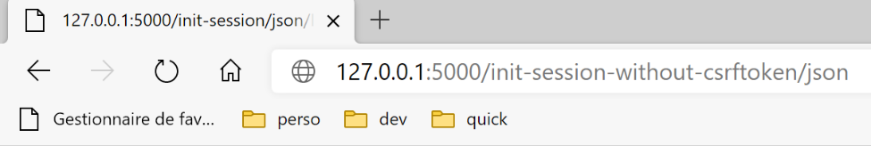

34. 应用练习：第14版

版本 14 的文件夹 [http-servers/09] 是通过复制版本 13 的文件夹 [http-servers/08] 获得的。
34.1. 简介
CSRF（跨站请求伪造）是一种会话劫持技术。维基百科（https://fr.wikipedia.org/wiki/Cross-site_request_forgery）对此解释如下：
- Malorie 设法获取了用于删除该帖子的链接。
- Malorie向Alice发送了一条包含待显示伪图片（实际上是一个脚本）的消息。该图片中的URL链接指向了用于删除目标帖子的脚本。
- 爱丽丝的浏览器中必须已打开马洛里所针对的网站会话。这是攻击能够悄无声息地成功执行的必要条件，否则会触发身份验证请求，从而引起爱丽丝的警觉。该会话必须具备执行马洛里破坏性请求所需的权限。 浏览器无需打开目标网站的标签页，甚至无需启动浏览器。只需该会话处于活动状态即可。
- 爱丽丝正在阅读玛洛丽发来的消息，她的浏览器使用了爱丽丝已打开的会话，因此无需进行交互式身份验证。浏览器试图获取图片的内容。在此过程中，浏览器触发了链接并删除了该消息，随后将一个纯文本网页作为图片内容加载。 由于无法识别关联的图像类型，浏览器未显示图片，爱丽丝因此并不知晓玛洛丽刚刚迫使她删除了这条消息。
即便如此解释，CSRF这一技术仍难以理解。让我们画个示意图：

- 在 [1-2] 阶段，爱丽丝与论坛（网站 A）进行通信。该论坛为每位用户维护一个会话。爱丽丝的浏览器会本地存储这个会话 Cookie，并在每次向网站 A 发出新请求时将其发送回去；
- 在 [3] 阶段，Malorie 向 Alice 发送了一条消息。Alice 通过浏览器阅读了该消息。所读消息的格式为 HTML，其中包含指向网站 B 上一张图片的链接。实际上，该链接指向一个 JavaScript 脚本，该脚本会在到达 Alice 的浏览器后执行；
- 该JavaScript脚本随后向网站A发起请求。爱丽丝的浏览器会自动发送该请求，并附带本地存储的会话cookie。攻击就在此时发生：玛洛丽成功利用爱丽丝的权限（会话）向网站A发起了查询。此后无论发生什么，攻击都已得逞；
为防范此类攻击，网站A可采取以下措施：
- 在每次与爱丽丝进行 [1-2] 数据交换时，网站 A 会发送一个密钥（下文称为令牌 token）CSRF，爱丽丝必须在下次请求时将其发回。因此，爱丽丝在每次请求中必须发送两项信息：
- 会话cookie；
- 在对网站A的上次请求响应中收到的令牌CSRF；
安全机制就在于此：虽然浏览器会自动将会话cookie发回网站A，但不会自动发送令牌CSRF。因此，攻击脚本执行的第6-7步交换将被拒绝，因为第6次请求中未发送令牌CSRF；
网站 A 可以通过多种方式向 Alice 发送令牌 CSRF，用于应用程序 HTML：
- 它可以在每次请求中发送一个包含所有链接的页面 HTML，其中所有链接都带有令牌 CSRF，例如 [http://siteA/chemin/csrf_token]。 在后续请求中，当爱丽丝点击其中一个链接时，网站 A 只需从请求的 URL 中提取令牌 CSRF，并验证其是否正确。这里将采用这种做法；
- 对于包含表单的页面，网站A可以将表单连同包含令牌CSRF的隐藏字段[input type=’hidden’]一并发送。当爱丽丝提交页面时，该令牌将随表单自动发送。 网站 A 将从请求主体（body）中获取令牌 CSRF；
- 其他技术方案也是可行的；
34.2. 配置

我们在应用程序的 [parameters] 配置中引入了两个布尔值：
- [with_redissession]：设为 True 时，应用程序使用 Redis 会话；设为 False 时，应用程序使用常规 Flask 会话；
- [with_csrftoken]：设为 True 时，应用程序的 URL 字段将包含一个 CSRF 令牌；
# 线程暂停时长（秒）
"sleep_time": 0,
# Redis 服务器
"with_redissession": True,
"redis": {
"host": "127.0.0.1",
"port": 6379
},
# CSRF令牌
"with_csrftoken": False,
34.3. CSRF 实现
我们将确保当：
config['parameters']['with_csrftoken']
等于 [True] 时，应用程序向客户端浏览器发送网页，其链接中将包含令牌 CSRF。
34.3.1. 模块 [flask_wtf]
CSRF令牌的实现将通过[flask_wtf]模块完成，该模块将安装在PyCharm终端中：
(venv) C:\Data\st-2020\dev\python\cours-2020\python3-flask-2020\packages>pip install flask_wtf
Collecting flask_wtf
…
34.3.2. 视图模板
我们在模型中引入了一个新类：

[AbstractBaseModelForView] 类定义如下：
from abc import abstractmethod
from flask import Request
from flask_wtf.csrf import generate_csrf
from werkzeug.local import LocalProxy
from InterfaceModelForView import InterfaceModelForView
class AbstractBaseModelForView(InterfaceModelForView):
@abstractmethod
def get_model_for_view(self, request: Request, session: LocalProxy, config: dict, résultat: dict) -> dict:
pass
def get_csrftoken(self, config: dict):
# csrf_token
if config['parameters']['with_csrftoken']:
return f"/{generate_csrf()}"
else:
return ""
- 第 9 行：类 [AbstractBaseModelForView] 实现了由视图模型类所实现的接口 [InterfaceModelForView]；
- 第 11-13 行：方法 [get_model_for_view] 未被实现；
- 第15-20行：如果应用程序已配置为使用令牌，则方法[get_csrftoken]会生成令牌CSRF。根据具体情况，该函数会返回一个以符号/开头的令牌，否则返回一个空字符串。 函数 [generate_csrf] 的特点是针对给定的客户端请求始终生成相同的值。处理请求涉及执行多个函数。在这些函数中使用 [generate_csrf] 始终会生成相同的值。 然而，在后续请求中，将生成一个新的令牌 CSRF；
所有视图 V 的 M 模板都将以如下方式包含令牌 CSRF：
class ModelForAuthentificationView(AbstractBaseModelForView):
def get_model_for_view(self, request: Request, session: LocalProxy, config: dict, résultat: dict) -> dict:
# 将页面数据封装到模板中
modèle = {}
…
# CSRF 令牌
modèle['csrf_token'] = super().get_csrftoken(config)
# 渲染模板
return modèle
- 每个视图模板类都继承自基类 [AbstractBaseModelForView]；
- 第 8 行：向父类请求令牌 CSRF。结果要么是空字符串，要么是类似 [/Ijk4NjQ2ZDdjZjI0ZDJiYTVjZTZjYmFhZGNjMjE3Y2U5M2I3ODI0NzYi.Xy5Okg.n-kSR_nslkndfT7AFVy2UDtdb8c] 的字符串；
34.3.3. 视图
从刚才的内容可以看出，所有视图 V 的模型 M 中都将包含令牌 CSRF。因此，它们可以在其中的链接中使用该令牌。下面看几个例子：
身份验证片段 [v_authentification.html]
<!-- 表单 HTML - 通过操作提交其值 [authentifier-utilisateur] -->
<form method="post" action="/authentifier-utilisateur{{modèle.csrf_token}}">
<!-- 标题 -->
<div class="alert alert-primary" role="alert">
<h4>Veuillez vous authentifier</h4>
</div>
…
</form>
- 第 2 行：根据刚才的分析，[action] 属性的 URL 将为：
[/authentifier-utilisateur/Ijk4NjQ2ZDdjZjI0ZDJiYTVjZTZjYmFhZGNjMjE3Y2U5M2I3ODI0NzYi.Xy5Okg.n-kSR_nslkndfT7AFVy2UDtdb8c]
或
这取决于应用程序是否配置为使用 CSRF 令牌；
税款计算片段 [v-calcul-impot.html]
<!-- 已发布的 HTML 表单 -->
<form method="post" action="/calculer-impot{{modèle.csrf_token}}">
<!-- 蓝色背景下的12列消息 -->
<div class="col-md-12">
<div class="alert alert-primary" role="alert">
<h4>Remplissez le formulaire ci-dessous puis validez-le</h4>
</div>
</div>
…
</form>
模拟片段 [v-liste-simulations.html]
{% if modèle.simulations is undefined or modèle.simulations|length==0 %}
<!-- 蓝色背景上的消息 -->
<div class="alert alert-primary" role="alert">
<h4>Votre liste de simulations est vide</h4>
</div>
{% endif %}
{% if modèle.simulations is defined and modèle.simulations|length!=0 %}
<!-- 蓝色背景上的消息 -->
<div class="alert alert-primary" role="alert">
<h4>Liste de vos simulations</h4>
</div>
<!-- 模拟表格 -->
<table class="table table-sm table-hover table-striped">
…
<!-- 表格主体（显示的数据） -->
<tbody>
<!-- 通过遍历模拟表来显示每项模拟 -->
{% for simulation in modèle.simulations %}
<!-- 显示包含 6 列的表格中的一行 - <tr> 标签 -->
<!-- 第1列：行标题（模拟编号） - 标签 <th scope='row' -->
<!-- 第2列：参数值 [marié] - 标签 <td> -->
<!-- 第3列：参数值 [enfants] - 标签 <td> -->
<!-- 第 4 列：参数值 [salaire] - 标签 <td> -->
<!-- 第5列：参数值 [impôt]（税款） - 标签 <td> -->
<!-- 第6列：参数值 [surcôte] - 标签 <td> -->
<!-- 第 7 列：参数值 [décôte] - 标签 <td> -->
<!-- 第8列：参数值 [réduction] - 标签 <td> -->
<!-- 第 9 列：参数值 [taux]（税款） - 标签 <td> -->
<!-- 第10列：模拟删除链接 - 标签 <td> -->
<tr>
<th scope="row">{{simulation.id}}</th>
<td>{{simulation.marié}}</td>
<td>{{simulation.enfants}}</td>
<td>{{simulation.salaire}}</td>
<td>{{simulation.impôt}}</td>
<td>{{simulation.surcôte}}</td>
<td>{{simulation.décôte}}</td>
<td>{{simulation.réduction}}</td>
<td>{{simulation.taux}}</td>
<td><a href="/supprimer-simulation/{{simulation.id}}{{modèle.csrf_token}}">Supprimer</a></td>
</tr>
{% endfor %}
</tr>
</tbody>
</table>
{% endif %}
菜单片段 [v-menu.html]
<!-- Bootstrap 菜单 -->
<nav class="nav flex-column">
<!-- 显示链接列表HTML -->
{% for optionMenu in modèle.optionsMenu %}
<a class="nav-link" href="{{optionMenu.url}}{{modèle.csrf_token}}">{{optionMenu.text}}</a>
{% endfor %}
</nav>
34.3.4. 路线
现在有两种类型的路线，取决于它们是否使用令牌：

- [routes_without_csrftoken] 指不使用令牌的路线CSRF。这些是上一版本的路线；
- [routes_with_csrftoken] 表示使用 CSRF 令牌的路由。
在 [routes_with_csrftoken] 中，路由现在多了一个参数，即令牌 CSRF：
# 前端控制器
def front_controller() -> tuple:
# 将请求转发至主控制器
main_controller = config['mvc']['controllers']['main-controller']
return main_controller.execute(request, session, config)
@app.route('/', methods=['GET'])
def index() -> tuple:
# 重定向至 /init-session/html
return redirect(url_for("init_session", type_response="html", csrf_token=generate_csrf()), status.HTTP_302_FOUND)
# init-session
@app.route('/init-session/<string:type_response>/<string:csrf_token>', methods=['GET'])
def init_session(type_response: str, csrf_token: str) -> tuple:
# 执行与该操作关联的控制器
return front_controller()
# 用户认证
@app.route('/authentifier-utilisateur/<string:csrf_token>', methods=['POST'])
def authentifier_utilisateur(csrf_token: str) -> tuple:
# 执行与该操作关联的控制器
return front_controller()
# 计算税款
@app.route('/calculer-impot/<string:csrf_token>', methods=['POST'])
def calculer_impot(csrf_token: str) -> tuple:
# 执行与该操作关联的控制器
return front_controller()
# 批量计算税款
@app.route('/calculer-impots/<string:csrf_token>', methods=['POST'])
def calculer_impots(csrf_token: str):
# 执行与该操作关联的控制器
return front_controller()
# 列出模拟
@app.route('/lister-simulations/<string:csrf_token>', methods=['GET'])
def lister_simulations(csrf_token: str) -> tuple:
# 执行与该操作关联的控制器
return front_controller()
# 删除模拟
@app.route('/supprimer-simulation/<int:numero>/<string:csrf_token>', methods=['GET'])
def supprimer_simulation(numero: int, csrf_token: str) -> tuple:
# 执行与该操作关联的控制器
return front_controller()
# 结束会话
@app.route('/fin-session/<string:csrf_token>', methods=['GET'])
def fin_session(csrf_token: str) -> tuple:
# 执行与该操作关联的控制器
return front_controller()
# 显示-计算-税款
@app.route('/afficher-calcul-impot/<string:csrf_token>', methods=['GET'])
def afficher_calcul_impot(csrf_token: str) -> tuple:
# 正在执行与该操作关联的控制器
return front_controller()
# 获取管理员数据
@app.route('/get-admindata/<string:csrf_token>', methods=['GET'])
def get_admindata(csrf_token: str) -> tuple:
# 正在执行与该操作关联的控制器
return front_controller()
现在所有路由的参数中都包含 CSRF 令牌，甚至包括 [/init-session] 路由。 这意味着用户无法通过直接输入 URL [/init-session/html] 来启动应用程序，因为其中缺少 CSRF 令牌。 现在必须通过第 7-10 行中的 URL [/] 进行调用。
路径选择在主脚本 [main] 中完成：
…
# 主线程不再需要日志器
logger.close()
# 如果发生错误则停止
if erreur:
sys.exit(2)
# 导入Web应用程序的路由
if config['parameters']['with_csrftoken']:
import routes_with_csrftoken as routes
else:
import routes_without_csrftoken as routes
# 配置路由
routes.config = config
# 启动 Flask 应用程序
routes.execute(__name__)
- 第9-13行：根据应用程序是否使用令牌来选择路由；
34.3.5. 控制器 [MainController]
每次请求时，服务器都必须检查是否存在令牌 CSRF。我们将通过主控制器 [MainController] 来实现这一功能，该控制器会处理所有请求：
from flask_wtf.csrf import generate_csrf, validate_csrf
…
# 处理请求
try:
# 日志记录
logger = Logger(config['parameters']['logsFilename'])
…
# 获取路径中的元素
params = request.path.split('/')
# 操作是第一个元素
action = params[1]
…
if config['parameters']['with_csrftoken']:
# csrf_token 是路径的最后一个元素
csrf_token = params.pop()
# 验证令牌的有效性
# 如果 csrf_token 不是预期的令牌，将抛出异常
validate_csrf(csrf_token)
…
except ValidationError as exception:
# CSRF令牌无效
résultat = {"action": action, "état": 121, "réponse": [f"{exception}"]}
status_code = status.HTTP_400_BAD_REQUEST
except BaseException as exception:
# 其他（意外）异常
résultat = {"action": action, "état": 131, "réponse": [f"{exception}"]}
status_code = status.HTTP_400_BAD_REQUEST
finally:
pass
# 将 csrf_token 添加到结果中
résultat['csrf_token'] = generate_csrf()
# 将发送给客户端的结果记录到日志中
log = f"[MainController] {résultat}\n"
logger.write(log)
- 第 20 行：从类型为 [http://machine :port/chemin/action/param1/param2/…/csrf_token] 的请求中，获取 URL 中的令牌 CSRF。 会话令牌始终是 URL 的最后一个元素；
- 第 23 行：验证从 URL 中提取的令牌 CSRF 与会话令牌 CSRF 的有效性。 如果无效，函数 [validate_csrf] 将抛出类型为 [ValidationError] 的异常（第 27 行）；
- 第 41 行：将令牌 CSRF 放入发送给客户端的结果中。 客户端 jSON 和 XML 需要该令牌。因为这些客户端收到的 HTML 页面中，其页面内含的链接中并不包含 CSRF 令牌。 因此，他们将通过服务器发送的 jSON 或 XML 结果获取该令牌；
注：第23行的[validate_csrf]函数并不检查严格匹配。令牌CSRF会以密钥[csrf_token]的形式存储在会话中。 测试结果似乎表明，如果令牌 CSRF 是该会话期间生成的，则其有效。因此，如果手动将浏览器中显示的 URL（例如 /lister-simulations/xyz） 将令牌 [xyz] CSRF 替换为之前操作中已接收的另一个令牌 [abc]，则操作 [/lister-simulations] 将成功；
34.4. 浏览器测试
操作：
- 使用参数 [with_csrftoken] 启动服务器，并将该参数设置为 [True]；
- 使用浏览器请求 URL [http://localhost:5000]；

- 在 [1] 中，令牌 CSRF；
进行操作直至获得模拟列表：

现在，我们手动输入 URL [http://localhost:5000/supprimer-simulation/1/x] 以删除 id=1 的模拟。我们故意输入一个错误的令牌 CSRF 来观察会发生什么。服务器的响应如下：

注1：目前尚不确定此处采用的方法是否始终足以抵御CSRF攻击。让我们回顾一下攻击流程：
如果通过 [5] 下载的 JavaScript 脚本能够读取爱丽丝所用浏览器的历史记录， 它就能获取浏览器执行过的 URL，以及类似 [/cible/csrf_token] 的 URL。 随后，它将能够获取会话令牌 [csrf_token]，并发起攻击 [6-7]。然而，浏览器仅允许利用执行脚本的浏览器窗口中的历史记录。 因此，如果爱丽丝没有使用同一个窗口来访问网站 A（[1-2]）并阅读玛洛丽的消息（[3]），那么攻击（CSRF）将无法实现。
34.5. 控制台客户端
测试该应用程序第 14 版另一种方法是沿用第 12 版的测试方案，并将其适配到新服务器上。

文件 [impots/http-clients/09] 最初是通过复制文件 [impots/http-clients/07] 获得的。随后对其进行了修改。
让我们回到初始化会话的路由：
# 应用程序根目录
@app.route('/', methods=['GET'])
def index() -> tuple:
# 重定向至 /init-session/html
return redirect(url_for("init_session", type_response="html", csrf_token=generate_csrf()), status.HTTP_302_FOUND)
# init-session-with-csrf-token
@app.route('/init-session/<string:type_response>/<string:csrf_token>', methods=['GET'])
def init_session(type_response: str, csrf_token: str) -> tuple:
# 执行与该操作关联的控制器
return front_controller()
这些路由均不适用于初始化 jSON 或 XML 会话：
- 第 2-5 行：路由 [/] 初始化会话 HTML；
- 第8-11行：路由[/init-session]需要一个我们不知道的令牌CSRF；
我们决定在服务器上添加一条新路由：
# 不使用CSRF令牌初始化会话
@app.route('/init-session-without-csrftoken/<string:type_response>', methods=['GET'])
def init_session_without_csrftoken(type_response: str) -> tuple:
# 重定向至 /init-session/type_response
return redirect(url_for("init_session", type_response=type_response, csrf_token=generate_csrf()), status.HTTP_302_FOUND)
- 第2行：新路由。它不要求CSRF令牌。因此我们回到了上一版本的[/init-session]路由；
- 第4-5行：将客户端（jSON、XML、 HTML）重定向至路由 [/init-session]，该路由的参数中包含令牌 CSRF；
我们可以使用浏览器测试这条新路由：

服务器（配置为 [with_csrftoken=True]）的响应如下：

- 在 [1] 路径下，服务器被重定向至 [/init-session] 路径，且 CSRF 令牌位于 URL 中；
- 在 [2] 中，令牌 CSRF 位于服务器发送的字典 jSON 中，该字典与密钥 [csrf_token] 相关联；
让我们回到客户端代码：

我们将 [config] 的配置修改如下：
config.update({
# 纳税人文件
"taxpayersFilename": f"{script_dir}/../data/input/taxpayersdata.txt",
# 结果文件
"resultsFilename": f"{script_dir}/../data/output/résultats.json",
# 错误文件
"errorsFilename": f"{script_dir}/../data/output/errors.txt",
# 日志文件
"logsFilename": f"{script_dir}/../data/logs/logs.txt",
# 税款计算服务器
"server": {
"urlServer": "http://127.0.0.1:5000",
"user": {
"login": "admin",
"password": "admin"
},
"url_services": {
"calculate-tax": "/calculer-impot",
"get-admindata": "/get-admindata",
"calculate-tax-in-bulk-mode": "/calculer-impots",
"init-session": "/init-session-without-csrftoken",
"end-session": "/fin-session",
"authenticate-user": "/authentifier-utilisateur",
"get-simulations": "/lister-simulations",
"delete-simulation": "/supprimer-simulation",
}
},
# 调试模式
"debug": True,
# csrf_token
"with_csrftoken": True,
}
)
…
# 初始化会话路由
url_services = config['server']['url_services']
if config['with_csrftoken']:
url_services['init-session'] = '/init-session-without-csrftoken'
else:
url_services['init-session'] = '/init-session'
- 第 31 行：一个布尔值将告知客户端，其所连接的服务器是否使用 CSRF 令牌；
- 第 37-40 行：为操作 [init-session] 设置服务 URL：
- 如果服务器使用 CSRF 令牌，则服务 URL 为 [/init-session-without-csrftoken]；
- 否则，服务令牌 URL 即为 [/init-session]；
已提出 [/init-session-without-csrftoken] 路径。它允许 jSON / XML 客户端在未持有 CSRF 令牌的情况下与服务器建立会话。 该客户端将在服务器的响应中获取该令牌。
接下来，我们修改实现客户端 [dao] 层的 [ImpôtsDaoWithHttpSession] 类：

# 导入
import json
import requests
import xmltodict
from flask_api import status
from AbstractImpôtsDao import AbstractImpôtsDao
from AdminData import AdminData
from ImpôtsError import ImpôtsError
from InterfaceImpôtsDaoWithHttpSession import InterfaceImpôtsDaoWithHttpSession
from TaxPayer import TaxPayer
class ImpôtsDaoWithHttpSession(InterfaceImpôtsDaoWithHttpSession):
# 构造函数
def __init__(self, config: dict):
# 父级初始化
AbstractImpôtsDao.__init__(self, config)
# 配置项存储
# 通用配置
self.__config = config
# 服务器
self.__config_server = config["server"]
# 服务
self.__config_services = config["server"]['url_services']
# 调试模式
self.__debug = config["debug"]
# 日志记录器
self.__logger = None
# Cookie
self.__cookies = None
# 会话类型（json、xml）
self.__session_type = None
# 令牌CSRF
self.__csrf_token = None
# 请求/响应阶段
def get_response(self, method: str, url_service: str, data_value: dict = None, json_value=None):
# [method]：方法 HTTP GET 或 POST
# [url_service]：服务 URL
# [data]：POST的x-www-form-urlencoded参数
# [json]：POST的参数（JSON格式）
# [cookies]：请求中需包含的cookie
# 必须拥有 XML 或 JSON 会话，否则无法处理响应
if self.__session_type not in ['json', 'xml']:
raise ImpôtsError(73, "il n'y a pas de session valide en cours")
# 将令牌 CSRF 添加到服务端 URL 中
if self.__csrf_token:
url_service = f"{url_service}/{self.__csrf_token}"
# 执行请求
response = requests.request(method,
url_service,
data=data_value,
json=json_value,
cookies=self.__cookies,
allow_redirects=True)
# 调试模式？
if self.__debug:
# 日志记录器
if not self.__logger:
self.__logger = self.__config['logger']
# 正在记录
self.__logger.write(f"{response.text}\n")
# 结果
if self.__session_type == "json":
résultat = json.loads(response.text)
else: # XML
résultat = xmltodict.parse(response.text[39:])['root']
# 如果响应中包含Cookie，则获取Cookie
if response.cookies:
self.__cookies = response.cookies
# 获取令牌 CSRF
if self.__config['with_csrftoken']:
self.__csrf_token = résultat.get('csrf_token', None)
# 状态码
status_code = response.status_code
# 若状态码不为 200，则返回 OK
if status_code != status.HTTP_200_OK:
raise ImpôtsError(35, résultat['réponse'])
# 返回结果
return résultat['réponse']
def init_session(self, session_type: str):
# 记录会话类型
self.__session_type = session_type
# 删除先前调用的令牌 CSRF
self.__csrf_token = None
# 请求 init-session 操作的 URL
url_service = f"{self.__config_server['urlServer']}{self.__config_services['init-session']}/{session_type}"
# 执行请求
self.get_response("GET", url_service)
…
- 第 38-92 行：令牌 CSRF 的处理主要在方法 [get_response] 中进行；
- 第 60 行：关键点在于参数 [allow_redirects=True]。这是其默认值，但我们特意将其突出显示；
当处于 [with_csrftoken=True] 模式时：
- 客户端通过调用路由 [/init-session_without_csftoken/type_response] 开始与服务器的交互；
- 服务器通过重定向至路由 [/init-session/type_response/csrf_token] 来响应此请求；
- 由于参数 [allow_redirects=True]，客户端 [requests] 将执行此重定向；
- 在第72行和第74行的检索结果中，将找到与密钥[csrf_token]关联的令牌CSRF；
当处于 [with_csrftoken=False] 模式时：
- （续）
- 客户端通过调用路由 [/init-session /type_response] 开始与服务器的对话；
- 服务器对此请求的响应是重定向至路由 [/init-session/type_response]；
- 由于参数 [allow_redirects=True] 的存在，客户端将随后访问 [requests] 路由；
- 第 81-82 行中没有可获取的 CSRF 令牌。因此，[self.__csrf_token] 属性始终保持为 None（第 36 行）；
- 第51-52行：对于后续所有请求，若存在令牌CSRF，则将其添加到初始路由中；
- 第81-82行：服务器在处理客户端每次新请求时生成的令牌会被本地存储，以便在第52行将其发回给后续请求；
此外，[init_session]方法稍作调整：
def init_session(self, session_type: str):
# 记录会话类型
self.__session_type = session_type
# 删除先前调用生成的令牌 CSRF
self.__csrf_token = None
# 请求 init-session 操作的 URL
url_service = f"{self.__config_server['urlServer']}{self.__config_services['init-session']}/{session_type}"
# 执行请求
self.get_response("GET", url_service)
这里需要记住，我们创建了路由 [/init-session-without-csrftoken/<type-response>]，用于在不使用令牌 CSRF 的情况下初始化客户端/服务器对话。 然而我们已看到，代码第 12 行调用的 [get_response] 方法会系统地将存储在 [self.__csrf_token] 中的令牌 CSRF 添加到服务端 URL 的末尾。 因此，代码第6行会删除该令牌CSRF（如果存在的话）。
就这样。为了测试，我们将执行：
- 控制台客户端 [main, main2, main3]；
- 测试类 [Test1HttpClientDaoWithSession] 和 [Test2HttpClientDaoWithSession]；
并将配置参数 [with_csrftoken] 依次设置为 True 然后 False。

以下是客户端 [main json] 与 [with_csrftoken=True] 配合运行时生成的日志示例：
2020-08-08 16:33:23.317903, MainThread : début du calcul de l'impôt des contribuables
2020-08-08 16:33:23.317903, Thread-1 : début du calcul de l'impôt des 4 contribuables
2020-08-08 16:33:23.317903, Thread-2 : début du calcul de l'impôt des 2 contribuables
2020-08-08 16:33:23.317903, Thread-3 : début du calcul de l'impôt des 4 contribuables
2020-08-08 16:33:23.317903, Thread-4 : début du calcul de l'impôt des 1 contribuables
2020-08-08 16:33:23.379221, Thread-2 : {"action": "init-session", "état": 700, "réponse": ["session démarrée avec le type de réponse json"], "csrf_token": "ImFiZmZkYjZmMzFkZDc2YWRjNWYwOGM0NTBmMGM4ODJjYzViOWI4NGEi.Xy63sw.H5L0--yWsvfaWvggrGw78z5VnN0"}
2020-08-08 16:33:23.381073, Thread-4 : {"action": "init-session", "état": 700, "réponse": ["session démarrée avec le type de réponse json"], "csrf_token": "ImY5YzQyMjlkYzcyYmM4YmZiMGI0NWY5MjE4MzIzNDExZjc0MGQ3MWQi.Xy63sw.q6olg7IP_g2ro_RBFRCX1BX90g8"}
2020-08-08 16:33:23.386982, Thread-3 : {"action": "init-session", "état": 700, "réponse": ["session démarrée avec le type de réponse json"], "csrf_token": "IjkxZGNlN2YyMmUxMjQ0M2Y0MTdjNDQ4ZmQ1MDMxZjkwNjBhNzAzZjMi.Xy63sw.-6buL11No3UJBlElpW4tX4B-lp0"}
2020-08-08 16:33:23.390269, Thread-1 : {"action": "init-session", "état": 700, "réponse": ["session démarrée avec le type de réponse json"], "csrf_token": "IjIxNmU4MDQyZDFmZmIyZDlmZjE4MzNlNDUzYzFjMGYxMWYxYzEwNGYi.Xy63sw.fgs6Cm2owsJf4NjTm7gKrVESabI"}
2020-08-08 16:33:23.413206, Thread-2 : {"action": "authentifier-utilisateur", "état": 200, "réponse": "Authentification réussie", "csrf_token": "ImFiZmZkYjZmMzFkZDc2YWRjNWYwOGM0NTBmMGM4ODJjYzViOWI4NGEi.Xy63sw.H5L0--yWsvfaWvggrGw78z5VnN0"}
2020-08-08 16:33:23.422877, Thread-2 : {"action": "calculer-impots", "état": 1500, "réponse": [{"marié": "non", "enfants": 3, "salaire": 100000, "impôt": 16782, "surcôte": 7176, "taux": 0.41, "décôte": 0, "réduction": 0, "id": 1}, {"marié": "oui", "enfants": 3, "salaire": 100000, "impôt": 9200, "surcôte": 2180, "taux": 0.3, "décôte": 0, "réduction": 0, "id": 2}], "csrf_token": "ImFiZmZkYjZmMzFkZDc2YWRjNWYwOGM0NTBmMGM4ODJjYzViOWI4NGEi.Xy63sw.H5L0--yWsvfaWvggrGw78z5VnN0"}
2020-08-08 16:33:23.428622, Thread-4 : {"action": "authentifier-utilisateur", "état": 200, "réponse": "Authentification réussie", "csrf_token": "ImY5YzQyMjlkYzcyYmM4YmZiMGI0NWY5MjE4MzIzNDExZjc0MGQ3MWQi.Xy63sw.q6olg7IP_g2ro_RBFRCX1BX90g8"}
2020-08-08 16:33:23.429127, Thread-3 : {"action": "authentifier-utilisateur", "état": 200, "réponse": "Authentification réussie", "csrf_token": "IjkxZGNlN2YyMmUxMjQ0M2Y0MTdjNDQ4ZmQ1MDMxZjkwNjBhNzAzZjMi.Xy63sw.-6buL11No3UJBlElpW4tX4B-lp0"}
2020-08-08 16:33:23.429127, Thread-1 : {"action": "authentifier-utilisateur", "état": 200, "réponse": "Authentification réussie", "csrf_token": "IjIxNmU4MDQyZDFmZmIyZDlmZjE4MzNlNDUzYzFjMGYxMWYxYzEwNGYi.Xy63sw.fgs6Cm2owsJf4NjTm7gKrVESabI"}
2020-08-08 16:33:23.429127, Thread-2 : {"action": "fin-session", "état": 400, "réponse": "session réinitialisée", "csrf_token": "IjU1YjlmZDA0OWRhNTJlODFmYjgyYjlhM2ExYWNhZmUzNTk2NjA5NGIi.Xy63sw.nyNSvkcG6iG0oIMBjtYPo8ySgdw"}
2020-08-08 16:33:23.438519, Thread-2 : fin du calcul de l'impôt des 2 contribuables
2020-08-08 16:33:23.443033, Thread-4 : {"action": "calculer-impots", "état": 1500, "réponse": [{"marié": "oui", "enfants": 3, "salaire": 200000, "impôt": 42842, "surcôte": 17283, "taux": 0.41, "décôte": 0, "réduction": 0, "id": 1}], "csrf_token": "ImY5YzQyMjlkYzcyYmM4YmZiMGI0NWY5MjE4MzIzNDExZjc0MGQ3MWQi.Xy63sw.q6olg7IP_g2ro_RBFRCX1BX90g8"}
2020-08-08 16:33:23.446510, Thread-3 : {"action": "calculer-impots", "état": 1500, "réponse": [{"marié": "oui", "enfants": 5, "salaire": 100000, "impôt": 4230, "surcôte": 0, "taux": 0.14, "décôte": 0, "réduction": 0, "id": 1}, {"marié": "non", "enfants": 0, "salaire": 100000, "impôt": 22986, "surcôte": 0, "taux": 0.41, "décôte": 0, "réduction": 0, "id": 2}, {"marié": "oui", "enfants": 2, "salaire": 30000, "impôt": 0, "surcôte": 0, "taux": 0.0, "décôte": 0, "réduction": 0, "id": 3}, {"marié": "non", "enfants": 0, "salaire": 200000, "impôt": 64210, "surcôte": 7498, "taux": 0.45, "décôte": 0, "réduction": 0, "id": 4}], "csrf_token": "IjkxZGNlN2YyMmUxMjQ0M2Y0MTdjNDQ4ZmQ1MDMxZjkwNjBhNzAzZjMi.Xy63sw.-6buL11No3UJBlElpW4tX4B-lp0"}
2020-08-08 16:33:23.453477, Thread-1 : {"action": "calculer-impots", "état": 1500, "réponse": [{"marié": "oui", "enfants": 2, "salaire": 55555, "impôt": 2814, "surcôte": 0, "taux": 0.14, "décôte": 0, "réduction": 0, "id": 1}, {"marié": "oui", "enfants": 2, "salaire": 50000, "impôt": 1384, "surcôte": 0, "taux": 0.14, "décôte": 384, "réduction": 347, "id": 2}, {"marié": "oui", "enfants": 3, "salaire": 50000, "impôt": 0, "surcôte": 0, "taux": 0.14, "décôte": 720, "réduction": 0, "id": 3}, {"marié": "non", "enfants": 2, "salaire": 100000, "impôt": 19884, "surcôte": 4480, "taux": 0.41, "décôte": 0, "réduction": 0, "id": 4}], "csrf_token": "IjIxNmU4MDQyZDFmZmIyZDlmZjE4MzNlNDUzYzFjMGYxMWYxYzEwNGYi.Xy63sw.fgs6Cm2owsJf4NjTm7gKrVESabI"}
2020-08-08 16:33:23.457912, Thread-4 : {"action": "fin-session", "état": 400, "réponse": "session réinitialisée", "csrf_token": "IjQ0ZDQxODgzN2M5NjRiYWI0NjA2MTk5YWFkNGFhMzY1M2IxNWMyNDIi.Xy63sw.mOa5MKXvJ-EXf_qEok-OqC5j_mg"}
2020-08-08 16:33:23.458442, Thread-4 : fin du calcul de l'impôt des 1 contribuables
2020-08-08 16:33:23.459045, Thread-3 : {"action": "fin-session", "état": 400, "réponse": "session réinitialisée", "csrf_token": "ImQ0NDZlYmViYjY1ZDUxYzJhMTNmM2JiZTRkMjBjZGJkYzE0OGVkYzMi.Xy63sw.fviTJz4zFDqVLlVlkrosT_JRPww"}
2020-08-08 16:33:23.459700, Thread-3 : fin du calcul de l'impôt des 4 contribuables
2020-08-08 16:33:23.460492, Thread-1 : {"action": "fin-session", "état": 400, "réponse": "session réinitialisée", "csrf_token": "Ijg3MjQ1NGUyYTUyOGEyNTdmZmNmYWZkMmU2OTgyMzUwNjI1YTlhZjIi.Xy63sw.I0xBl9Q8DzsuXPSgOdeARc_VKBA"}
2020-08-08 16:33:23.460492, Thread-1 : fin du calcul de l'impôt des 4 contribuables
2020-08-08 16:33:23.460492, MainThread : fin du calcul de l'impôt des contribuables
如果观察依次接收到的 CSRF 令牌，可以看到它们各不相同。